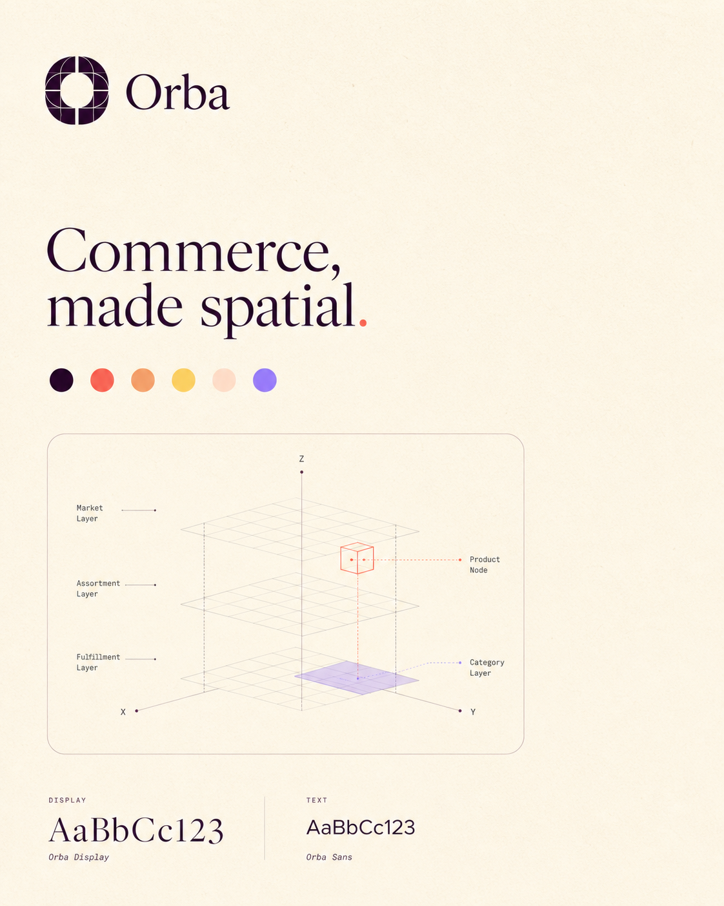
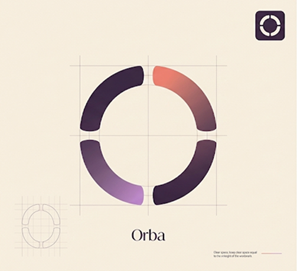
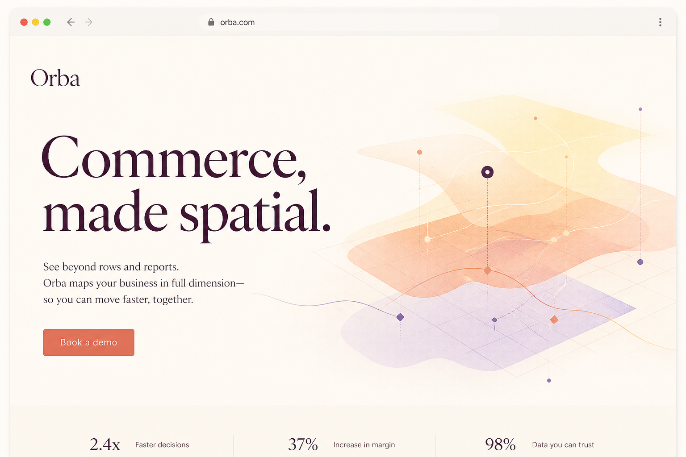
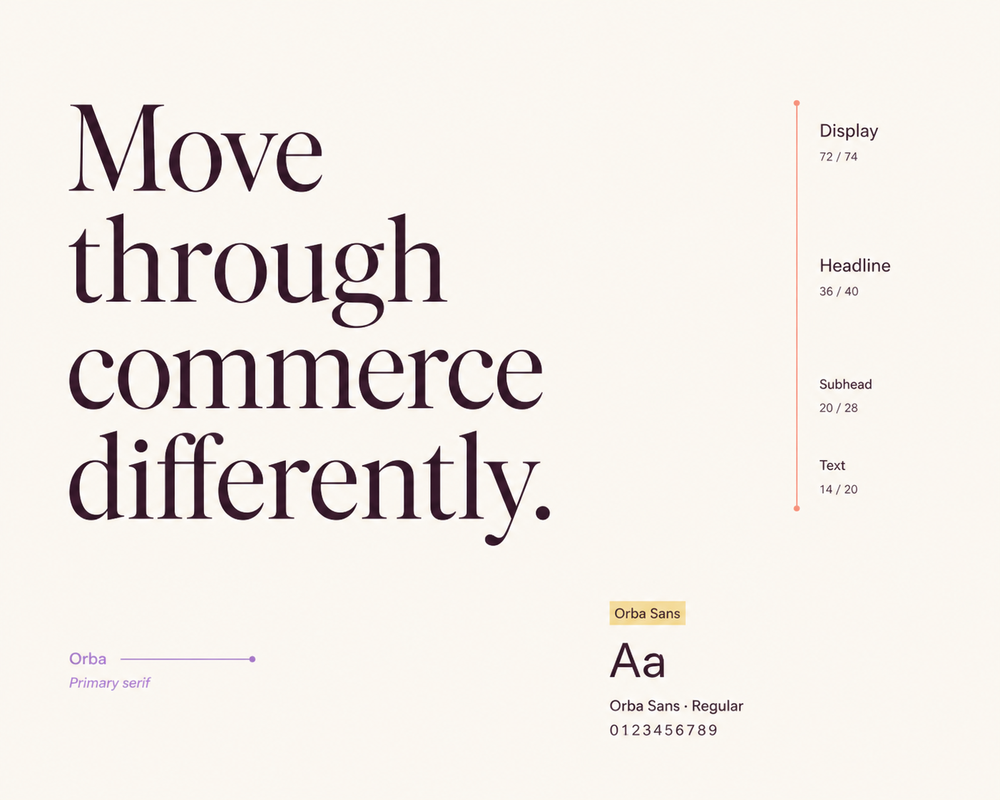
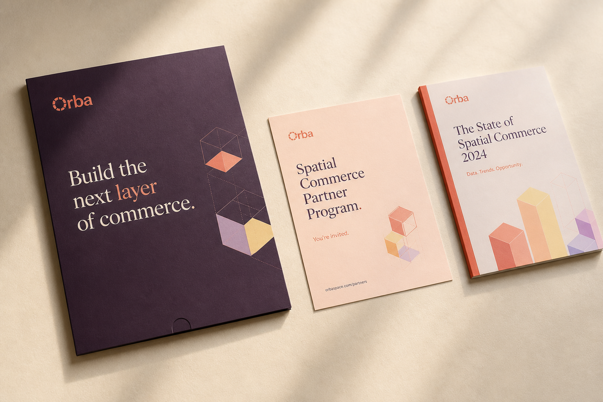

Orba
A full visual identity and digital system for a spatial commerce platform, built to scale.

Challenge
Orba was launching a new category of spatial commerce with no established visual language, and needed an identity that felt credible to both retail partners and consumers from day one.
Approach
We built a brand system from first principles: typography, color, motion and a spatial grid. We then translated it into a digital design system that could scale across marketing, product and partner-facing surfaces.
Scope
A visual language built to scale.

Identity system. A confident wordmark and color system designed to hold up across packaging and product UI alike.

Mark and monogram.
.png)
Applied to the product interface.

Marketing site. The identity, translated into a full marketing website built to introduce the category to a new audience.

Typography system.

Partner-facing collateral.
Rather than delivering a static brand book, we built the identity as a working system: tokens for color, type and spacing that could flow directly into the product design system Orba's team would build on.
This meant every downstream decision, however small, could be traced back to the same set of foundational choices.
Have something worth
getting right?
Tell us what you're building.